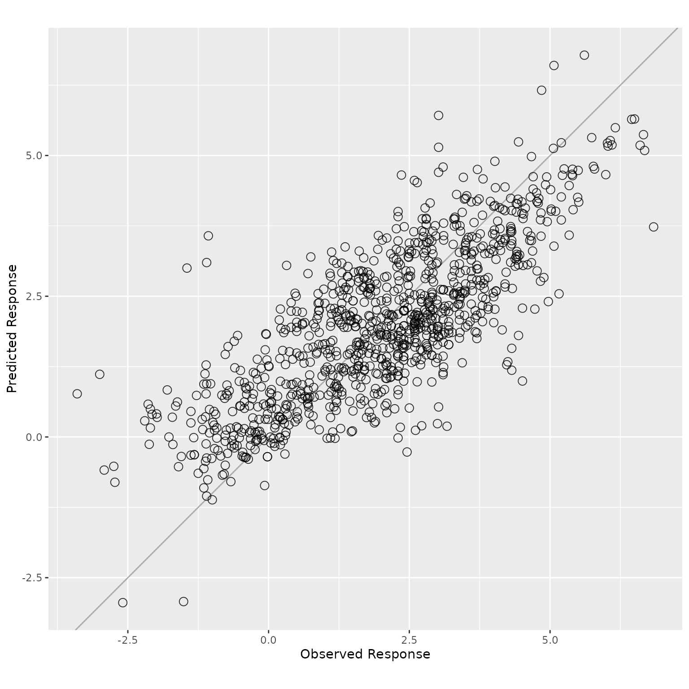
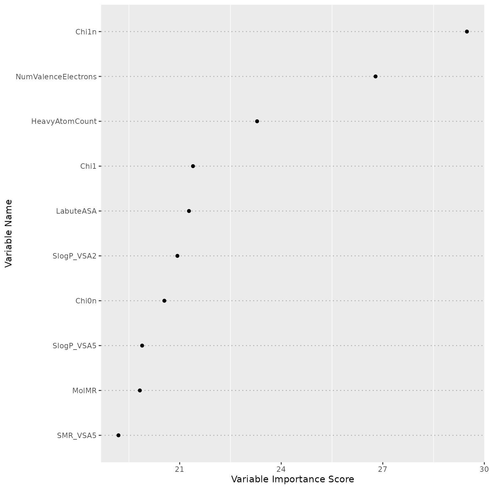
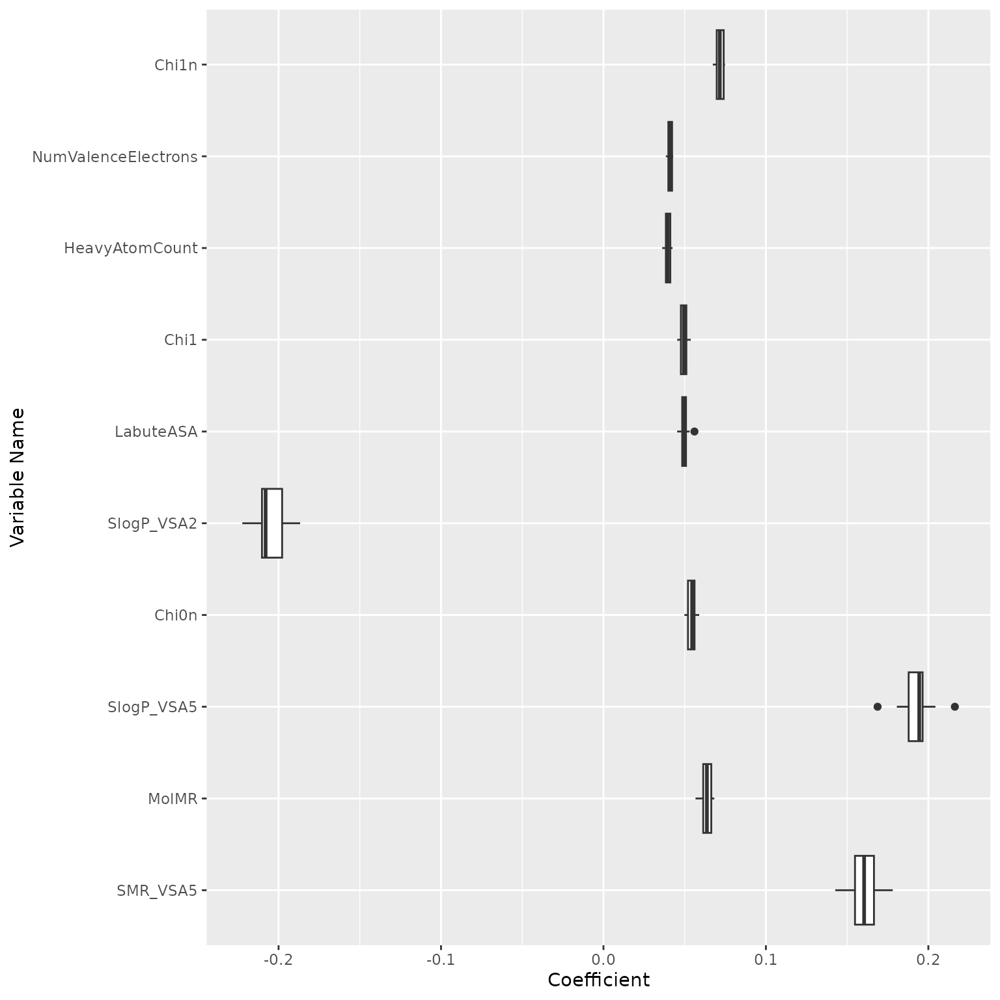
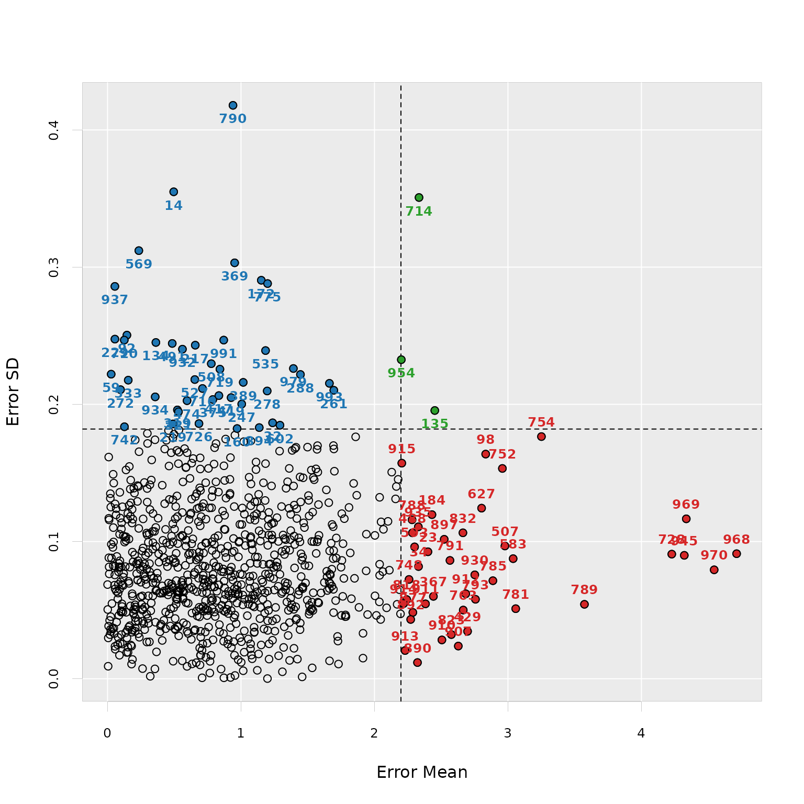
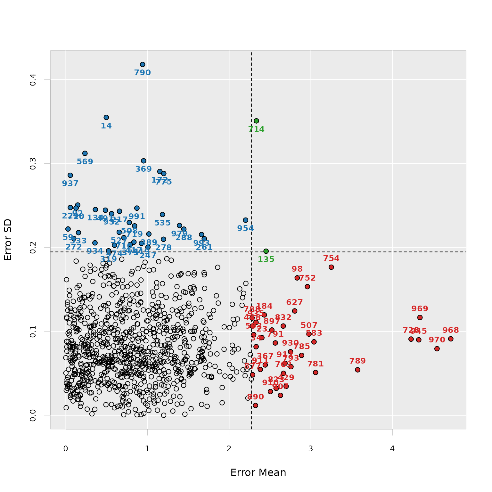
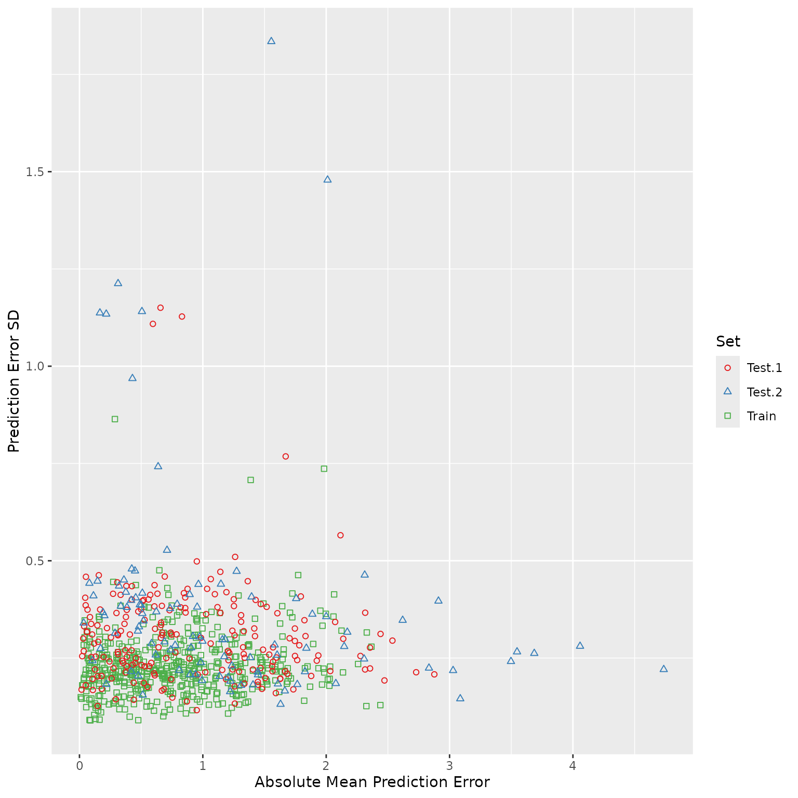

Introduction
The enpls package offers an algorithmic framework for
measuring feature importance, detecting outliers, and ensemble modeling
based on (sparse) partial least squares regression. The key functions
included in the package are listed in the table below.
| Task | Partial Least Squares | Sparse Partial Least Squares |
|---|---|---|
| Model fitting | enpls.fit() |
enspls.fit() |
| Cross validation | cv.enpls() |
cv.enspls() |
| Detect outliers | enpls.od() |
enspls.od() |
| Measure feature importance | enpls.fs() |
enspls.fs() |
| Evaluate applicability domain | enpls.ad() |
enspls.ad() |
Next, we will use the data from (Wang et al.
2015) to demonstrate the general workflow of enpls.
The dataset contains 1,000 compounds, each characterized by 80 molecular
descriptors. The response is the octanol/water partition coefficient at
pH 7.4 (logD7.4).
Let’s load the data and take a look at it:
library("enpls")
library("ggplot2")
data("logd1k")
x <- logd1k$x
y <- logd1k$y
head(x)[, 1:5]
#> BalabanJ BertzCT Chi0 Chi0n Chi0v
#> 1 1.949 882.760 16.845 13.088 13.088
#> 2 1.970 781.936 15.905 13.204 14.021
#> 3 2.968 343.203 9.845 7.526 7.526
#> 4 2.050 1133.679 19.836 15.406 15.406
#> 5 2.719 437.346 12.129 9.487 9.487
#> 6 2.031 983.304 19.292 15.289 15.289
head(y)
#> [1] -0.96 -0.92 -0.90 -0.83 -0.82 -0.79Model fitting
Here we fit the ensemble sparse partial least squares to the data, so that the model complexity could usually be further reduced than vanilla partial least squares when we build each model.
set.seed(42)
fit <- enspls.fit(x, y, ratio = 0.7, reptimes = 20, maxcomp = 3)
y.pred <- predict(fit, newx = x)
df <- data.frame(y, y.pred)
ggplot(df, aes_string(x = "y", y = "y.pred")) +
geom_abline(slope = 1, intercept = 0, colour = "darkgrey") +
geom_point(size = 3, shape = 1, alpha = 0.8) +
coord_fixed(ratio = 1) +
xlab("Observed Response") +
ylab("Predicted Response")
#> Warning: `aes_string()` was deprecated in ggplot2 3.0.0.
#> ℹ Please use tidy evaluation idioms with `aes()`.
#> ℹ See also `vignette("ggplot2-in-packages")` for more information.
#> This warning is displayed once every 8 hours.
#> Call `lifecycle::last_lifecycle_warnings()` to see where this warning was
#> generated.
We used the fitted model to predict on the training data and plotted the predicted values against the true values.
The parameter ratio decides the sampling ratio for each
Monte-Carlo run; maxcomp controls the maximum number of
components included within each model; reptimes sets the
times of Monte-Carlo resampling, we recommend setting it to a large
number (500 by default).
One common parameter for all functions in enpls is
parallel, it controls the number of CPU cores to use if you
want to train the models in parallel.
Cross validation
K-fold cross validation is a traditional way to measure the empirical
predictive performance of the model. We can use function
cv.enpls() or cv.enspls() to perform
-fold
cross validation for the ensemble (sparse) partial least squares
model.
Since the parameters (number of components and level of sparsity) are
automatically tuned for each model in enpls, the cross
validation here is used to see if certain combinations of parameters
(specified by ratio, maxcomp,
alpha, etc.) can produce ensemble models with better
performance.
cv.fit <- cv.enspls(x, y,
nfolds = 5, ratio = 0.7,
reptimes = 10, maxcomp = 3, verbose = FALSE
)
cv.fit
#> Cross Validation Result for Ensemble Sparse Partial Least Squares
#> ---
#> RMSE = 1.1410
#> MAE = 0.913153
#> Rsquare = 0.587959
plot(cv.fit)
The returned object gives three model performance evaluation metrics for the ensemble model: RMSE, MAE, and . Here we also plotted the predicted values for each test fold against the true response.
Feature importance
To measure feature importance, simply use enpls.fs() or
enspls.fs():
fs <- enspls.fs(x, y, ratio = 0.7, reptimes = 20, maxcomp = 3)
print(fs, nvar = 10)
#> Variable Importance by Ensemble Sparse Partial Least Squares
#> ---
#> Importance
#> Chi1n 29.48614
#> NumValenceElectrons 26.78683
#> HeavyAtomCount 23.28745
#> Chi1 21.39361
#> LabuteASA 21.27471
#> SlogP_VSA2 20.93239
#> Chi0n 20.54714
#> SlogP_VSA5 19.89059
#> MolMR 19.82387
#> SMR_VSA5 19.19199
plot(fs, nvar = 10)
plot(fs, type = "boxplot", nvar = 10)
The top 10 most important features are ranked as above. The boxplot gives additional information about the coefficient stability of each feature. We can see the feature TPSA (Topological Polar Surface Area) has different pattern compared to others: it has large effect size, but the effect sizes also have a large variance. This indicates that TPSA is important for predicting logD7.4. However, such importance may vary on different subsets of the samples.
Outlier detection
By using information from the prediction error distribution for each sample produced by many models, we can measure if the responses of particular samples are harder to predict than the others. Such measurements can help on identifying outliers in the dataset. Thus, they can be removed to get us a “clean” dataset before the actual modeling.
This could be done with enpls.od(),
enspls.od() easily:

plot(od, criterion = "sd", sdtimes = 2)
The two plots showed that several samples in our dataset might be outlier candidates, based on two different criterions. The samples in each area of the plots represent different types of outliers.
Applicability domain evaluation
Model applicability domain measures how well the predictive model (PLS/Sparse PLS model) we built on the training set performs on external test sets. A certain type of perturbation (such as bootstrapping, jackknifing) is applied to the samples or the variables of the training set, and we could get many different predictions for all samples in all test sets (and of course, including the training set) using each sub-model built with each perturbated training set. The general evaluation strategy design and comparisons were analyzed in Kaneko and Funatsu (2014).
The functions enpls.ad() and enspls.ad()
could help us evaluate the model applicability domain. Here we
constructed two “pseudo” test sets from the original logd1k
dataset for demonstration:
# remove low variance variables
x <- x[, -c(17, 52, 59)]
# make training set
x.tr <- x[1:500, ]
y.tr <- y[1:500]
# make two test sets
x.te <- list(
"test.1" = x[501:700, ],
"test.2" = x[701:800, ]
)
y.te <- list(
"test.1" = y[501:700],
"test.2" = y[701:800]
)
ad <- enspls.ad(x.tr, y.tr, x.te, y.te,
maxcomp = 3, space = "variable", method = "mc",
ratio = 0.8, reptimes = 50
)
plot(ad)
Additionally, by using
plot(ad, type = "interactive")we will get an interactive plot, which could help us better explore the model applicability domain by supporting zooming-in / inspecting which sample each point represents interactively. The interactive plot is based on plotly, and it only requires an HTML viewer to be correctly rendered.
Conclusion
Ensemble learning approaches are not only powerful for improving base learner’s predictive performance but also capable of accomplishing model diagnostic tasks, such as measuring the importance of features. It would be interesting to see if such ideas could be applied to more relevant topics and further facilitate the predictive modeling tasks.